Coffee & Viz
The Need for Geospatial Participatory Modeling
Jelena Vukomanovic

Complex environmental problems require bigger data and better models
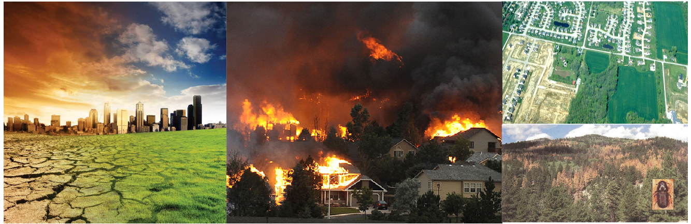Stakeholder participation is necessary to understand trade-offs and find solutions
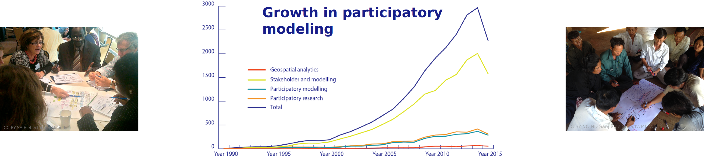
Participatory Modeling
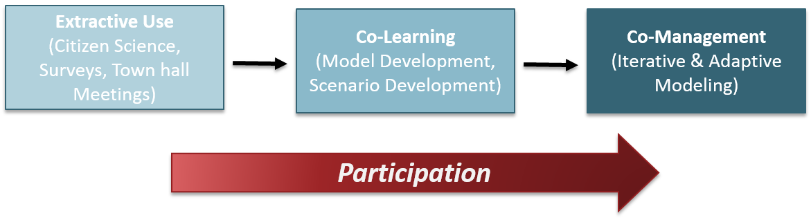Making It Real!
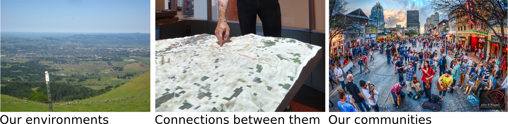Geospatial analytics offers 3 ways to better engage stakeholders…
Making It Real with PLACE
Contextualizing place motivates stakeholders to explore an issue that affects them

Making it spatial, makes it personal
Making It Real with SPATIAL INTERACTION
Visualizing spatial interaction catalyzes new understandings of connectedness
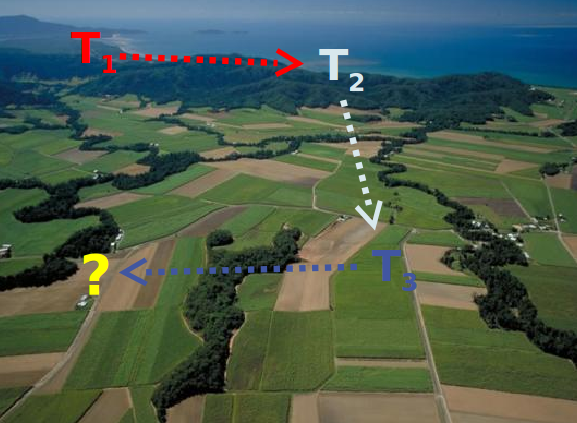 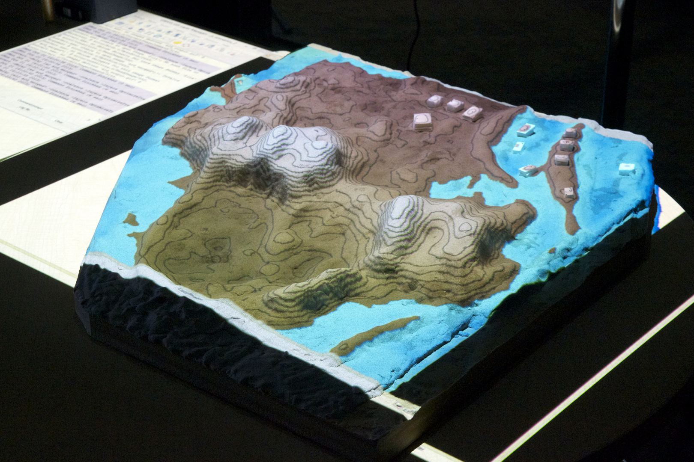
What happens here, affects there!
Making It Real with SPATIAL SCALE
Where’s the problem? What’s the process?
Geospatial Participatory Modeling
Dynamic, adaptive models that enable stakeholders to visualize and explore the roles of place, spatial interaction, and spatial scale through all steps of the research process
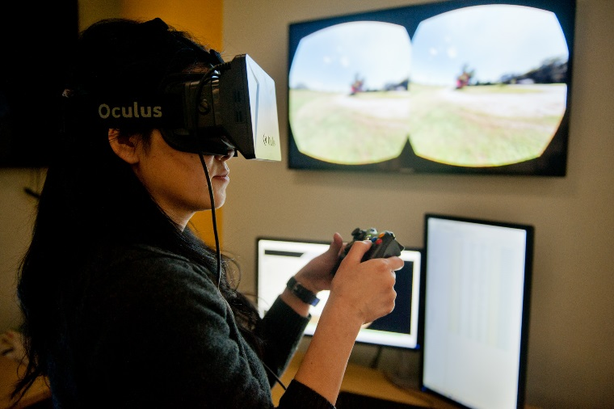 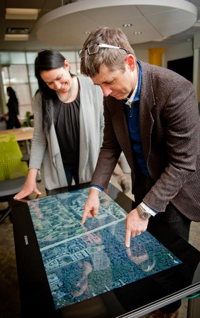 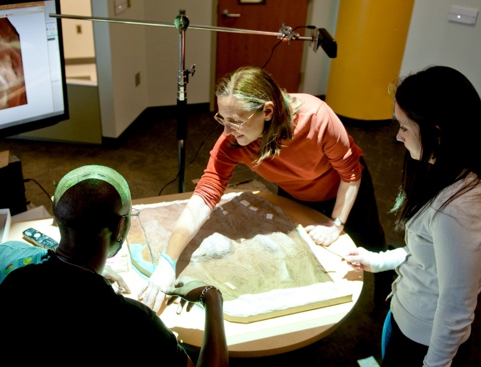
Coffee & Viz
Serious Gaming with Tangible Landscape
Brendan Harmon, Anna Petrasova & Vaclav Petras
Computational modeling
Developing games with
Tangible Landscape
A tangible user interface powered by open source GIS
Coupling a digital and physical model of a landscape
Physically manifesting digital data so that you can intuitively feel and shape it with your hands


Near real-time interaction
How-it-works


Intuitive scientific modeling with Tangible Landscape


Scientific gaming
To make scientific problem solving a game we need:
- goals
- rules
- interactivity
- challenging tasks
- scores
Termite game


Coastal game


Coffee & Viz:
Collaborative Management of Invasive Species
Using Tangible Landscape
Center for Geospatial Analytics
Francesco Tonini & Douglas Shoemaker
Invasive Species
Global Change: increased human mobility, land-use change

Environmental Impacts
Habitat alteration
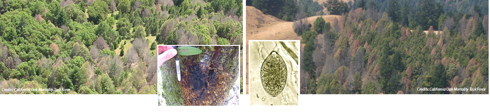
Economic Impacts
Structural damage
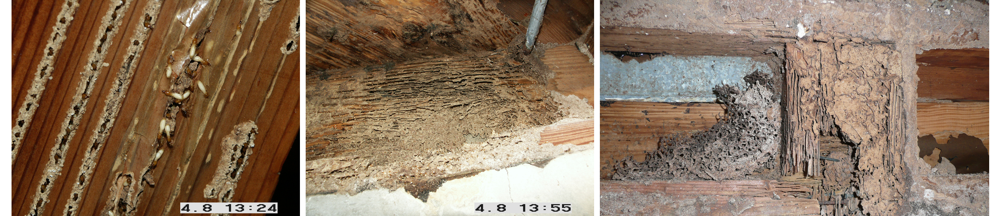
Key Management Issues
Time to action counts!

Key Management Issues(cont.)
Cost of treatments!
- Invasive termites in the U.S.: ≈ $750 mi property damage
- In U.S. each year control cost for termites alone $1.5+ billion
Key Management Issues(cont.)
Allocation & efficacy of treatments!

Collaborative Management Using Tangible Landscape
Co-learning and collaboration
- Quickly and intuitively learn dynamics of complex spread models

Collaborative Management Using Tangible Landscape
Co-learning and collaboration
- Stakeholders virtually placed into the landscape
Collaborative Management Using Tangible Landscape
Co-learning and collaboration
- Quickly develop & test management strategies
Collaborative Management Using Tangible Landscape
Co-learning and collaboration
- Receive near-real time feedback
Treatments Allocation (in the field)
Localized treatments of infested areas (e.g. fumigation, host removal, chemical treatments)

Treatments Allocation (on Tangible Landscape)
Delineation of eradication/control areas directly on Tangible Landscape

Termite infestation game
Setting
This game is set in Dania Beach, Florida, a neighborhood at risk of invasion by termites. Try to save as many city blocks as possible from infestation with preventative treatment given a limited budget.
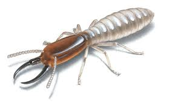Termite infestation game
Instructions
- Players have a limited treatment budget (10 blocks)
- At the beginning of each round players will see a map of the city and a map of termite habitat
- Then players may place treatment blocks on the game board in order to protect against termites
- The game master runs the termite spread simulation and shows the results
- At the end of each round players will see the animated spread of termites, the budget spent, and the number of city blocks infested
- For new players the game master randomizes the starting locations of the initial termite colonies
Modeling Coastal Dynamics
Center for Geospatial Analytics
Helena Mitasova, Anna Petrasova, Vaclav Petras, Brendan Harmon
Geospatial data, aerial and ground photos: NOAA Digital Coast, USGS, NCDOT and NCSU MEAS research program
North Carolina Coast: Dynamic Landscape
- Sandy barrier islands are continuously shaped by ocean and wind
- Storms and hurricanes bring shore erosion, flooding, inlets opening and filling
- Lidar mapping since 1996 captures 3D dynamics, identifies vulnerable locations

Landscape shaped by wind: Jockey's Ridge sand dunes
Active migrating dune system within fixed state park boundaries, lost half of its height and split into multiple smaller ridges

Jockey's Ridge migration 1974 - 2014


Landscape shaped by ocean waves and currents: Cape Fear
Capes and inlets are the most dynamic landforms: Bald Head island shoreline evolution and Cape Fear dynamics
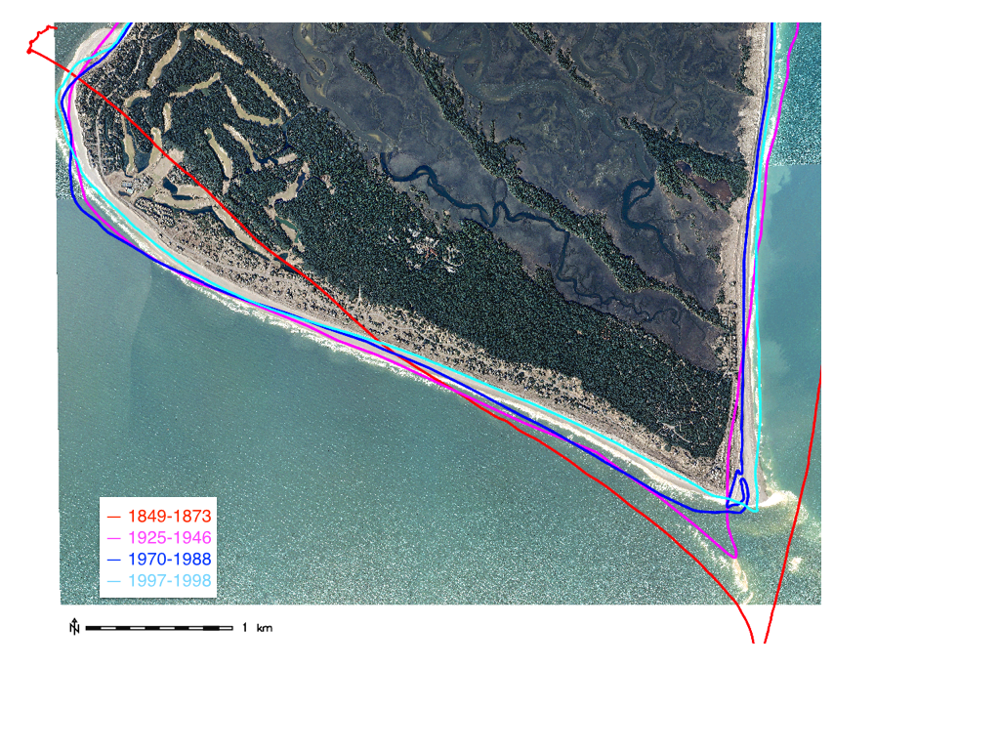 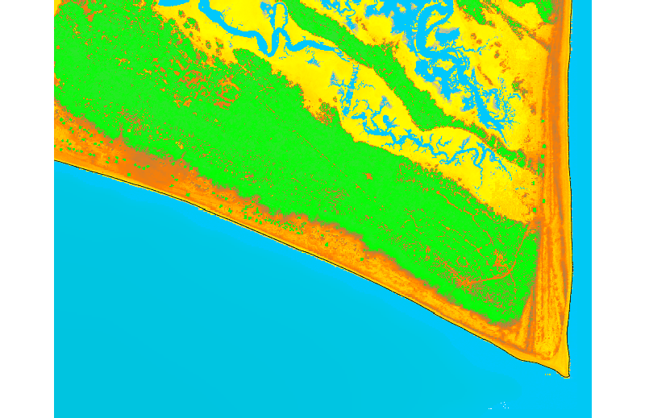
Static structures in dynamic landscape are vulnerable
Coastal erosion moves shoreline and degrades dunes making homes vulnerable to flooding

Storm surge flooding
Foredunes protect homes and infrastructure from flooding during storms,
their degradation increases vulnerability
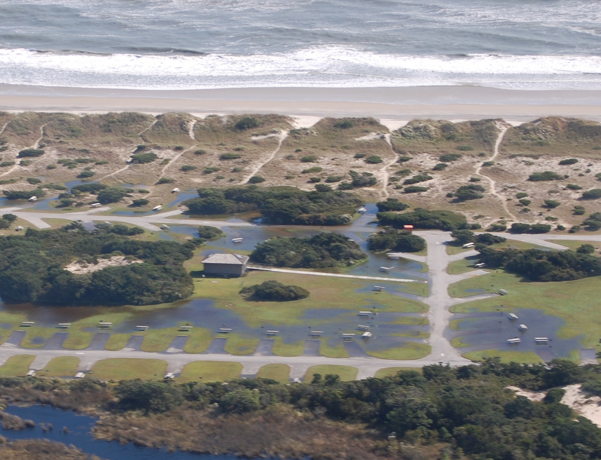


Simulation of extreme storm surge flooding: Cape Fear
Flooding extent simulation at Cape Fear area


Coastal flooding game
This game is set on a vulnerable stretch of the coast on Bald Head Island, North Carolina.
The community is protected from the ocean by a foredune, but the dune may be breached and a storm surge may flood the homes.
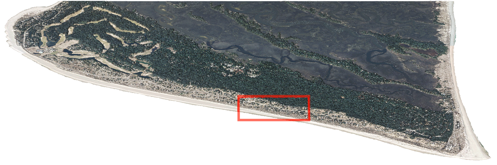 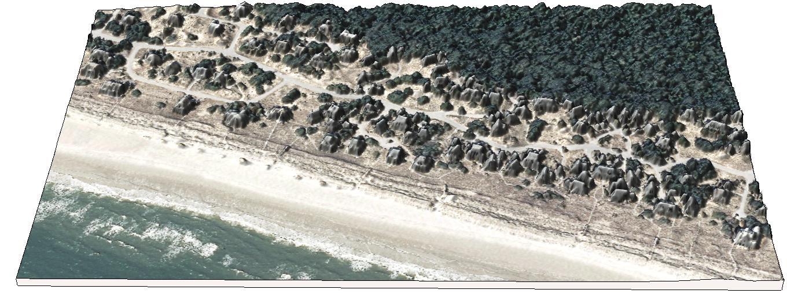
Coastal flooding game
Objective: Build coastal defenses with your limited sand budget to save as many homes as possible from flooding.
- Phase 1: Players build flood defenses using their sand budget
- Phase 2: The game master breaches the foredune at a random location
- Phase 3: The game master runs a 3m storm surge simulation
- Phase 4: At the end of each round players will see the breaches in the dune, the simulated flooding, and the number of houses lost
Interactive Bald Head Island
Unique community striving for sustainable development: exploring the landscape in the Hunt library Teaching and Visualization laboratory